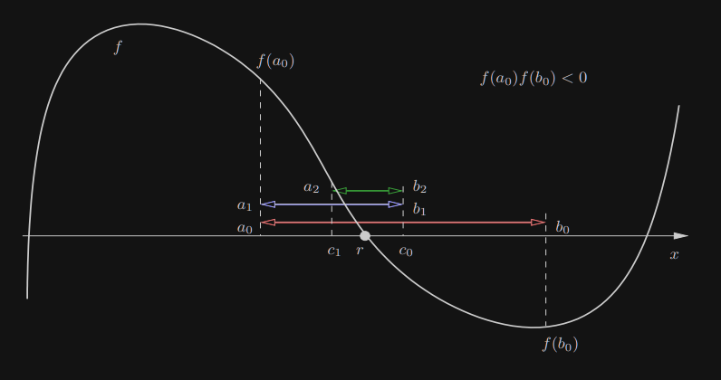

1. Metoda bisekcji (połowienia)
Założenia:
- f jest funkcją ciągłą w [a;b]
- f(a)⋅f(b)<0 (f zmienia znak)

cn=21(an+bn)(n≥0)
Warunek końca: ∣bn−an∣≤δ, ∣f(cn)∣≤ϵ
2. Algorytm
- Dane: a,b,M,δ,ϵ
- Wyniki k,r~,f(r~)
- u←f(a)
- v←f(b)
- e←b−a
if sgn(u)=sgn(v):
return error
for k←1 to M:
- e←2e
- c←a+e
- w←f(c)
if ∣e∣<δ or ∣w∣<ϵ:
return k,c,w
if sgn(w)=u:
- b←c
- v←w
else
- a←c
- u←w
3. Twierdzenie o zbieżności metody bisekcji
Niech [a0,b0];[a1,b2];…;[an,bn];… będzie ciągiem przedziałów konstruowanych przez metodę bisekcji. Wówczas istnieją granice limn→∞an oraz limn→∞bn i są sobie równe, reprezentujące zero r funkcji f.
Jeśli r=limn→∞cn oraz cn=21(an+bn), wówczas ∣r−cn∣≤2−(n+1)(b0−a0).
3.1. D-d
Końce generowanych przedziałów spełniają zależności a0≤a1≤a2≤⋯≤b0b0≥b1≥b2≥⋯≥a0
bn−an=21(bn−1−an−1)=2−n(b0−a0)
Ponieważ ciąg {an} (odp. {bn}) jest rosnący (odp. malejący) i ograniczony z góry (odp. dołu), więc zbieżny.
Zatem n→∞limbn−n→∞liman=n→∞lim2−n(b0−a0)=0
Stąd limn→∞bn=limn→∞an=r. Przechodząc do granicy w nierówności 0≥f(an)⋅f(bn), otrzymujemy 0≥(f(r))2. Co implikuje f(r)=0 (zbieżność).
Niech [an,bn] będzie przedziałem wygenerowanym przez metodę bisekcji. Jeśli warunek końca jest już spełniony, oczywiście r∈[an,bn], wówczas najlepszym przybliżeniem pierwiastka r jest środek przedziału cn=2an+bn.
Błąd możemy oszacować następująco: ∣r−cn∣≤21(bn−an)=2−(n+1)(b0−a0)■
3.2. Przykład
Niech [50,63] będzie przedziałem, w którym f ma pierwiastek.
Jaka jest liczba iteracji metody bisekcji, aby wyznaczyć pierwiastek z błędem względnym 10−12? ∣r∣∣r−cn∣≤50∣r−cn∣≤2−(n+1)5013≤10−12
Rozwiązując powyższą nierówność otrzymujemy n≥37.